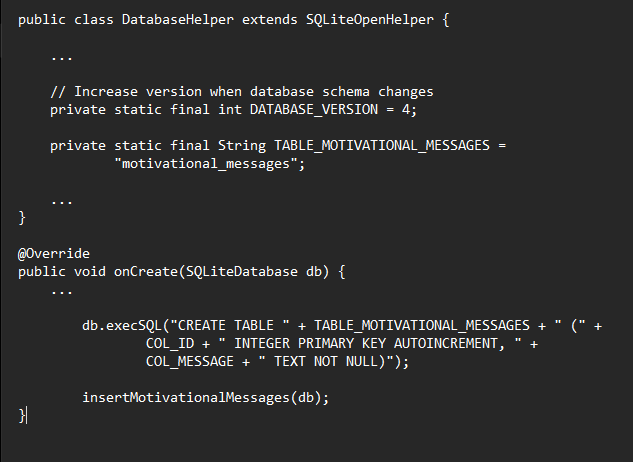
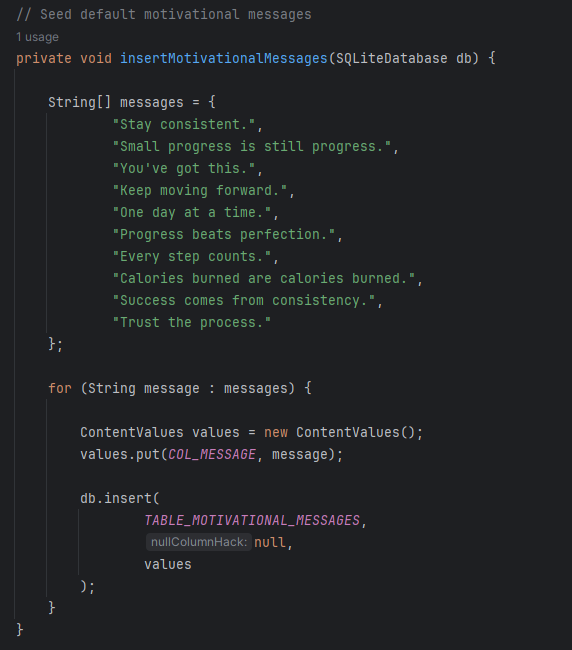
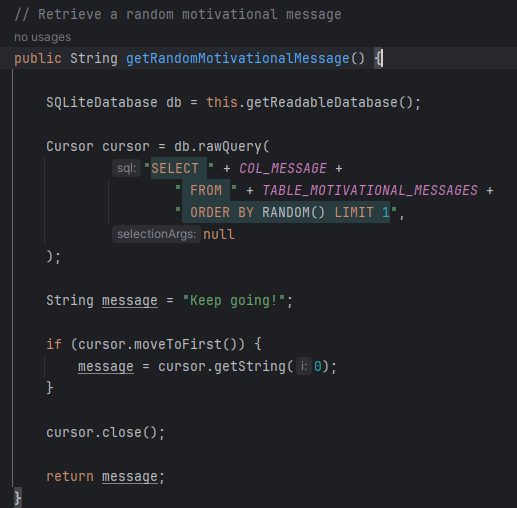
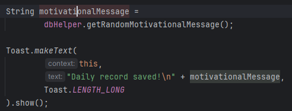
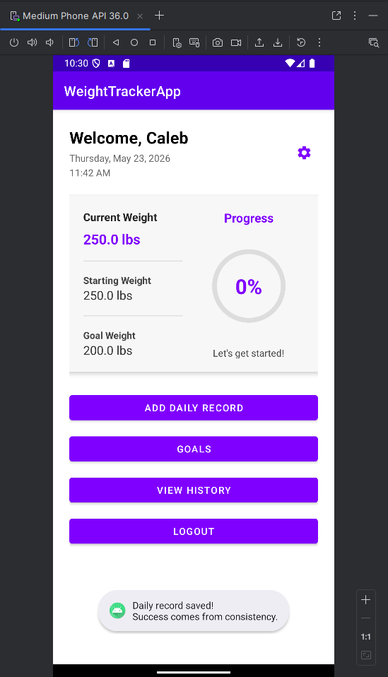
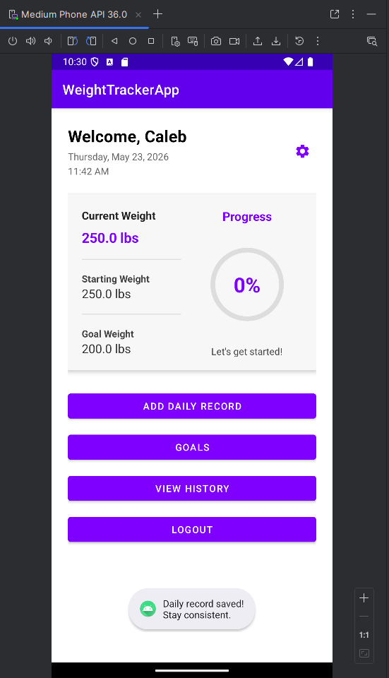

The focus of Category Three was expanding the application's database functionality through schema enhancement, database integration, and dynamic content retrieval. While the Weight Tracker application already utilized SQLite for user accounts, goals, and DailyRecord information, the database primarily functioned as a storage mechanism.
To strengthen the database component of the application, I implemented a database-driven motivational message system. This enhancement required expanding the SQLite schema, performing a database version upgrade, initializing default records, executing randomized queries, and integrating database results directly into the user experience.
The first step of this enhancement was expanding the SQLite database schema through the addition of a new motivational_messages table. This required increasing the database version and updating the database creation workflow to support the new table structure.
By storing motivational content within SQLite rather than hardcoding messages directly into application logic, the application became more maintainable and easier to expand in future versions.

After creating the new table, an initialization process was implemented to automatically populate the database with default motivational messages. This ensured that motivational content would be available immediately after database creation without requiring user input.
The insertMotivationalMessages() method inserts a predefined collection of motivational messages into the database during application initialization.

Once messages were stored in SQLite, a retrieval system was developed to return a random motivational message whenever a Daily Record is successfully saved. The retrieval process is performed directly through SQLite using a randomized query.
This implementation demonstrates SQL query execution, record retrieval, and dynamic database-driven application behavior.

The motivational message system was integrated directly into the Daily Record workflow. When a user saves a Daily Record, the application executes a database query, retrieves a random motivational message, and displays the result using an Android Toast notification.
This enhancement demonstrates how database functionality can directly contribute to user interaction rather than serving solely as a storage layer.

Testing verified successful schema expansion, table initialization, randomized query execution, and user interface integration. Multiple Daily Record submissions were performed to confirm that different motivational messages were returned from the database.
These results confirmed that the database was correctly storing records, retrieving data, and interacting with application workflows as intended.
Motivational Message Examples


This enhancement demonstrates several important database concepts, including schema evolution, database version management, table creation, record insertion, query execution, randomized retrieval, and application integration.
Rather than functioning only as a storage mechanism, SQLite became an active component of the application's user experience. The enhancement showcases how databases can support dynamic functionality while maintaining scalability and maintainability.
Testing focused on validating successful database creation, schema updates, table population, query execution, and user interface integration. Verification confirmed that motivational messages were inserted during initialization and successfully retrieved through randomized SQL queries.
Additional testing confirmed that existing application functionality remained operational following the database upgrade, including authentication, goal management, dashboard calculations, historical tracking, and analytics features.
This enhancement expanded the role of SQLite within the application by transforming the database from a simple storage solution into an active component of the overall user experience. Through schema expansion, automated data initialization, randomized retrieval, and workflow integration, the application gained new functionality while maintaining compatibility with existing features.
The project strengthened my understanding of database design, schema management, query execution, and application integration. It also reinforced the importance of designing database solutions that can evolve alongside application requirements over time.